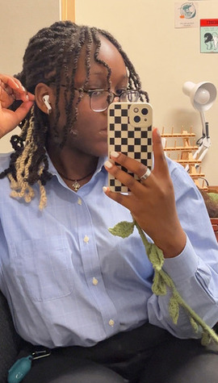

Me about to head out for a Career Trek to Lowe's Tech Hub
Personal Background: Hello! My name is Precious and
I'm 18. I was born and raised in Raleigh, NC, and in my free time I like to read,
draw, play video games, and practice the guitar.
Professional Background: I haven't worked for anything
CS related right now, but I'm currently working at Panera.
Academic Background: Currently a junior studying Computer Science
with a concentration in Web and Mobile Development, and a minor in Italian
Primary Computer Platform: Windows 11 on an Acer laptop.
Courses I'm Taking & Why:
EDUC 1511 - Local Social Science: Taking for general education
because it's online.
ITLN 1202 - Elementary Italian II: I want to minor in Italian.
ITSC 1200 - Freshman Seminar: Required for my Learning Community
ITIS 3135 - Web-Based Application Design and Development: Required Course.
ITSC 2175 - Logic and Algorithms: Required for major
MATH 2164 - Matrices and Linear Algebra: Required for major